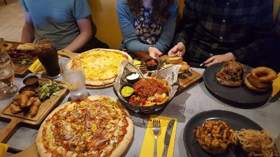
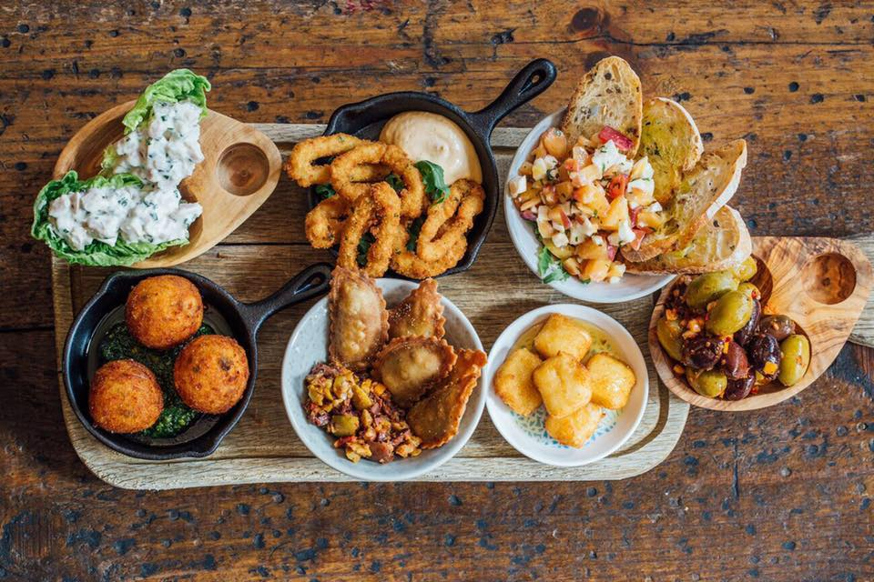
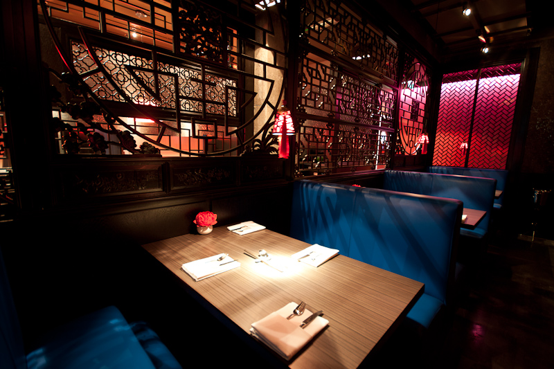
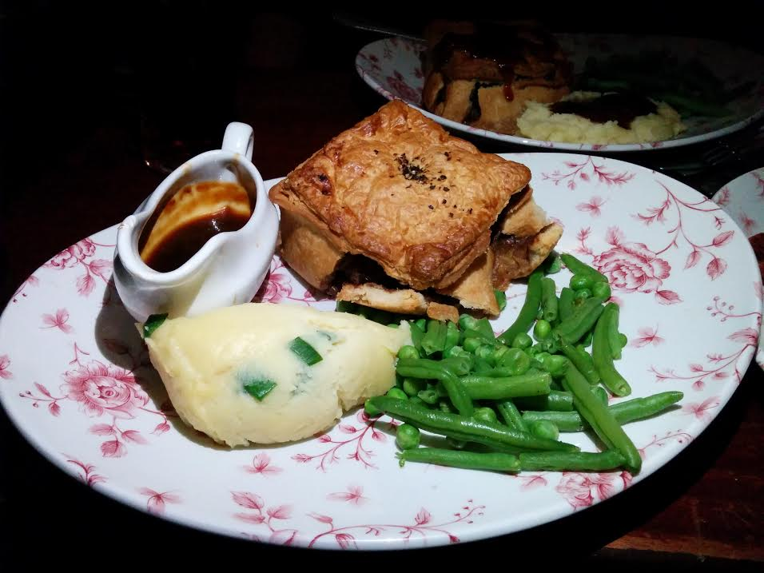
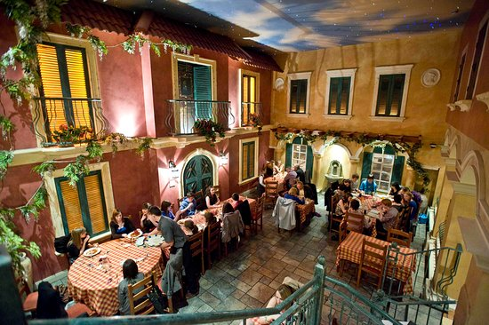
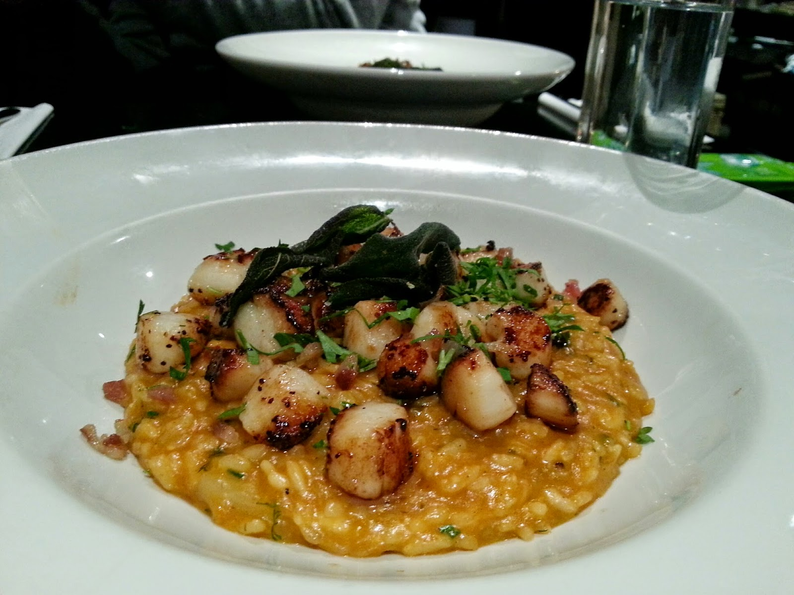

| Brooklyn Sqaure The ultimate ‘cheat day’ restaurant, Brooklyn Square delivers big flavours and big portions. If you do two things 1) make sure to come here hungry, and 2) don’t bother wear a belt! Famed for their sizzling plates, mega burgers and all-America style sides, if you’re in the mood for a gluttonous meal without the grease, this is the place to go! Pro tip: Go for the garlic and chilli curly fries to have the side of your life http://brooklyn-sq.com/ |
" |
|  | Coppi Coppi is self-described as modern Italian dining and it delivers just that! Their cicchetti (or Italian tapas) will keep you coming back for more, and their pizzettes are the perfect size to have alongside them. The mains are all delicious catering for meat and fish lovers alike, they even have a full vegan menu so nobody has to miss out! Pro tip: If you’re on a budget, go for lunch to try their 3-7-3 menu (starters and puddings £3 and mains £7) delivering the tastiest food at the best price! http://www.coppi.co.uk/ |
| Hadskis The first time I came to look around Queen’s my parents took me for dinner at Hadskis…and let’s just say maybe that’s how I knew this was the university for me! Priding themselves on using the best local ingredients, Hadskis delivers classic dishes spruced up to give an elegant often European twist. This marriage of cooking styles produces some of the best and most interesting combinations in Belfast. The perfect setting for a date night, what could go wrong with trying their Chateaubriand for two finished off their clementine & passionfruit upside down cheesecake? https://www.hadskis.co.uk/ |
|
|  | House of Zen In the heart of the Cathedral Quarter you’ll find one of the most unique spots in the city. Starting your meal off with one of their dazzling cocktails is never a bad idea, partnered with their dishes incorporating the flavours and ingredients of the east, such as kumquat, wasabi and Chinese angelica, what’s more to want! However, if you’re not feeling so adventurous, House of Zen provides a few takeaway classics such as; sweet and sour chicken, Thai satay and salt and chilli prawns, so even the pickiest eaters will be satisfied! Pro tip: Don’t pass up on the Dragon Tail Ribs! http://www.houseofzenbelfast.co.uk/ |
| The Crown Liqour Salon If you have come for proper pub food and classic Irish dishes, this is the spot for you! Opening in 1826, now owned by the National Trust, The Crown is one of the gems of the Victoriana. Through careful restoration over the years, the bar still retains many of its original features as well as a few replicas. There a ten closed booths originally built for people to drink and remain unseen, now they offer a more private dining experience. Hearty fish cakes, Irish stew and sausages with buttery champ are just a few picks from their delicious menu, at very affordable prices too The Crown should definitely be a stop if you are ever in Belfast! https://www.nationaltrust.org.uk/the-crown-bar |
 |

|
Revolución de Cuba All the Latin flavours of a fiesta washed down with…you guessed it…plenty of rum, Revolución de Cuba brings the Cuban spice to your life! With live music and salsa beats playing till late and tasty tapa to go alongside, this is a winning combo for sure. If you like vibrant, colourful food flavoured with chilli, lime and plenty of caramelised pineapple this spot is perfect. Mains including chimichangas, mojito prawns and halloumi tacos pair beautifully with tapas to nibble on before. The kind of place you want to be with a group of friends so you can all experience the flavours and sounds of Cuba! https://www.revoluciondecuba.com/bar/belfast/ |
| Villa Italia Whereas Coppi delivers contemporary Italian, Villa Italia takes a more traditional approach. Inside, the restaurant is styled to replicate a beautiful Italian villa with a ceiling lit up by stars creating a Mediterranean homely ambiance. Whilst the pizzas are spectacular, for me the real stars are their poultry dishes which come in various indulgent sauces with garlic potato cubes and buttery veg to dip in, just heaven! http://villaitaliarestaurant.co.uk/ |
 |
|  | Mourne Seafood Bar Easily the best seafood restaurant in Belfast, perhaps even in Northern Ireland, Mourne Seafood Bar delivers the best fresh fish and shellfish all sourced from their own shellfish beds. With a menu that constantly evolves depending on the catch of the day, whilst you can’t be promised to eat the same dish twice, you can always expect to be blown away! Mackerel, oysters, scallops, hake, squid, seabream and crab just to name a few possibilities from the menu, expertly paired with delights such as seaweed hollandaise, bouillabaisse potatoes, chilli gremolata and braised fennel. If you a fan of food from the sea, book straight away as bookings fill up quick! https://www.mourneseafood.com/ |